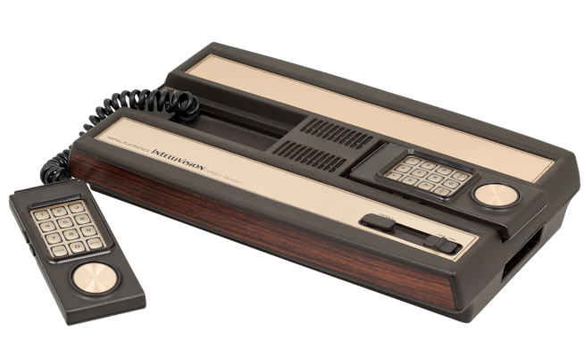
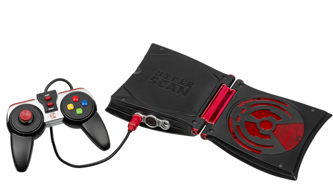

Mattel Intellivision
La Intellivision fue una videoconsola doméstica
desarrollada por Mattel Electronics y comercializada
inicialmente en Estados Unidos a partir de 1979,
antes de ampliar su distribución durante 1980.
Su nombre procede de la expresión inglesa
"Intelligent Television". Compitió principalmente
con la Atari 2600 y destacó por sus juegos deportivos
y estratégicos, así como por sus gráficos.
Las estimaciones de ventas varían según la fuente,
y suelen situarse entre 3 y 5 millones de unidades.

Mattel HyperScan
La HyperScan fue una videoconsola desarrollada
por Mattel y lanzada en Norteamérica en 2006.
Su propuesta combinaba videojuegos en CD con
tarjetas coleccionables que utilizaban tecnología
RFID (identificación por radiofrecuencia). La
consola podía leer estas tarjetas para desbloquear
personajes, habilidades y otras funciones dentro
de los juegos.
La HyperScan tuvo una vida comercial muy corta:
Mattel dejó de comercializarla en 2007 debido
a sus malos resultados. A pesar de su fracaso
comercial, resulta un ejemplo curioso de los
intentos de combinar objetos físicos y videojuegos.
